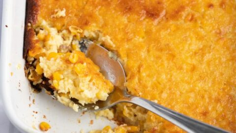

Corn Pudding

| Prep Time: |
10 min |
| Total Time: |
1 hr 10 min |
Description
Corn pudding is something I had never had until we started doing our own holidays.
A dish that my partner's grandma always made, it was something that couldn't be left
out when deciding what to make for Christmas. This dish is creamy, its sweet, and
really offsets all of the savory options on this list.
Ingredients
- 5 large eggs
- 1/3 cup butter, melted
- 1/4 cup white sugar
- 1/2 cup milk
- 1/4 cup cornstarch
- 1 can whole kernel corn, drained
- 2 cans cream-style corn
Instructions
- Preheat oven to 400°F. Grease casserole dish
- Whisk eggs in a large bowl. Add milk, butter, sugar, and cornstarch. Whisk until combined
- Stir in drained corn and cream-style corn until fully mixed. Pour into casserole dish
- Bake for about 1 hour. It is done when the top is golden brown and the mixture has thickened a bit
- Let cool and enjoy!
Home
Top of Page